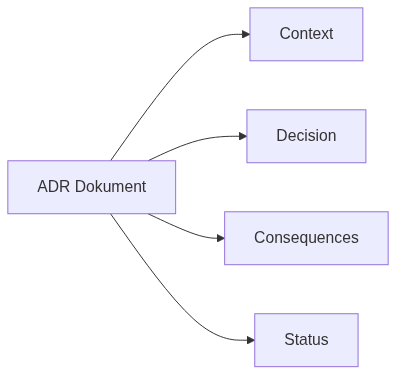

Architecture Decision Records (ADR)

Architecture Decision Records represents a structured method for documenting important architecture decisions within code-based systems. The process begins with problem identification and follows a systematic approach to analyze context, evaluate alternatives and formulate well-founded decisions.
Overall Description
Architecture as Code methodology forms the foundation for Architecture Decision Records (ADR) which forms a systematic approach for documenting important architecture decisions that affects the system structure, performance, security and maintainability. ADR method was introduced by Michael Nygard and has become an established best practice in modern system development.
For Swedish organizations implementing Architecture as Code, ADR is particularly valuable because it ensures architecture decisions are documented in a structured manner that meets compliance requirements and facilitates knowledge transfer between teams and over time.
ADR functions as architecture's "commit messages" - short, focused documents that capture context (context), problem, the chosen alternative and consequences of important architecture decisions. This enables traceability and understanding for why specific technical choices were made.
The Swedish digitalization strategy emphasizes the importance of transparent and traceable decisions within the public sector. ADR method supports these requirements by creating a audit trail of architecture decisions that can be reviewed and evaluated over time.
What is Architecture Decision Records?
Architecture Decision Records are defined as short text documents that capture important architecture decisions together with their context and consequences. each ADR describes a specific decision, problem it solves, alternatives that were considered and rationale behind the chosen alternative.
The ADR format follows typically a Structured template that includes:
Status: Current status for decision (proposed, accepted, deprecated, superseded) Context: Background and circumstances that led to the need for decision Decision: the specific decision that was made Consequences: Expected positive and negative consequences
Official guidelines and templates are available at https://adr.github.io, which serves as the primary resource for ADR methodology. This website is maintained by the ADR community and contains standardized templates, tools and examples.
In the Architecture as Code context means ADR documentation of decisions about technology choices, architecture patterns, security strategies and operational policies that are codified in architecture definitions.
structure and components of ADR

each ADR follows a standardiserad structure with four huvudkomponenter that ensure konsekvent and complete documentation of architecture decisions.
Standardiserad ADR-template
each ADR follows a konsekvent structure that ensure all relevant information fångas systematiskt:
# ADR-XXXX: [Short Description of decision]
## Status
[Proposed | Accepted | Deprecated | Superseded]
## Context
Description of problem as needs lösas and the circumstances
that led to the need for this decisions.
## Decision
the specific decision that was made, including technical details
and architecture as code-implementation approach.
## Consequences
### Positiva consequences
- Förväntade fördelar and förbättringar
### Negativa consequences
- Identifierade risker and begränsningar
### Mitigering
- Åtgärder to handle negative consequences
Numrering and versionering
ADR numreras sekventiellt (ADR-0001, ADR-0002, etc.) to create a kronologisk ordning and enkel referens. Numreringen is permanent - also about A ADR depreceras or is replaced behålls originalets nummer.
Versionering is managed through Git-history instead for inline-changes. about A decisions forändras are created A nytt ADR as superseder the ursprungliga, which bevarar The historiska contexten.
Status lifecycle

ADR-livscykeln illustrerar how decisions is developed from initialt forslag through granskningsprocessen to Architecture as Code-implementation, monitoring and eventuell avveckling when new solutions is needed.
ADR undergoes typically following statusar:
Foreslagen: Initialt forslag as undergoes granskning and diskussion Accepted: Godkänt decisions as should implementeras Deprecated: Beslut as not längre rekommentheir but can finnas kvar in systems Superseded: Ersatt of A nyare ADR with referens to ersättaren
Praktiska example at ADR
examples 1: Val of architecture as code tool
Architecture as Code-principerna within This area
# ADR-0003: Val of Terraform for architecture as code
## Status
Accepted
## Context
Organisationen needs standardisera at A architecture as code tool
to handle AWS and Azure-environments. Nuvarande manual processes
creates inconsistens and operational risker.
## Decision
We will use Terraform as primary architecture as code tool for all
cloud-environments, with HashiCorp Configuration Language (HCL) as
standardsyntax.
## Consequences
### Positiva consequences
- Multi-cloud support for AWS and Azure
- Stor community and comprehensive provider-ekosystem
- Declarative syntax as matchar våra policy-requirements
- State management for traceability
### Negativa consequences
- Inlärningskurva for team as is vana at imperative scripting
- State file management komplexitet
- Kostnad for Terraform Cloud or Enterprise features
### Mitigering
- training programs for development teams
- implementation of Terraform remote state with Azure Storage
- Pilotprojekt before complete utrullning
examples 2: Security Architecture for Swedish organizations
# ADR-0007: Zero Trust Network Architecture
## Status
Accepted
## Context
GDPR and MSB:s guidelines for cybersäkerhet requires robust security measures.
Traditionell perimeter-baserad security is otillräcklig for modern
hybrid cloud-environment.
## Decision
implementation of Zero Trust Network Architecture with mikrosegmentering,
multi-factor authentication and continuous verification through
architecture as code.
## Consequences
### Positiva consequences
- Förbättrad compliance of svenska security requirements
- Reducerad attack surface through mikrosegmentering
- Förbättrad auditbarhet and traceability
### Negativa consequences
- Ökad komplexitet in nätverksarkitektur
- Prestationsöverhuvud for continuous verification
- Högre operational kostnader
### Mitigering
- Fasad implementation with pilot-projekt
- Prestandaövervakning and optimering
- Extensive documentation and training
Tools and best methods for ADR within architecture as code
ADR-tools and integration
Flera tools facilitates creation and management of ADR:
adr tool: Kommandoradsverktyg to create and handle ADR-filer adr-log: Automatisk generering of ADR-index and tidslinje Architecture Decision Record plugins: Integration with IDE:er that VS Code
For Architecture as Code-projekt rekommentheir integration of ADR in Git repository structure:
docs/
├── adr/
│ ├── 0001-record-architecture-decisions.md
│ ├── 0002-use-terraform-for-architecture as code.md
│ └── 0003-implement-zero-trust.md
├── infrastructure/
└── README.md
Git-integration and arbetsflöde
ADR functions optimalt when integrerat in Git-baserade utvecklingsarbetsflöden:
Kodgranskningar: ADR inklutheir in kodgranskningsprocessen for architecture changes Branch Protection: requires ADR for major architectural changes automation: CI/CD-pipelines can validate to relevant ADR exist for significant changes
Kvalitetsstandards for Swedish organizations
to meet svenska compliance requirements should ADR follow specific kvalitetsstandards:
Språk: ADR can skrivas at svenska for interna stakeholders with engelska technical termer for verktygskompatibilitet Spårbarhet: Klar länkning between ADR and implemented code Åtkomst: Transparent togång for revisorer and efterlevnadsansvariga Retention: Långsiktig arkivering according to organizational policier
Gransknings- and styrningsprocess
Effective ADR-implementation requires etablerade granskningsprocesser:
Intressentengagemang: Relevanta team and arkitekter involveras in granskning Tidslinje: Definierade tidsgränser for återkoppling and decisions Escalation: Tydliga eskaleringsvägar for disputed decisions Approval Authority: Dokumenterade roller for different typer of architecture decisions
Integration with Architecture as Code
ADR spelar a central roll in Architecture as Code-metodik by document design decisions that are then implemented as code. This integration creates a clear link between intentioner and implementation.
Architecture as Code-templates can referera to relevant ADR to forklara design decisions and implementation choices. This creates självdocumentserande infrastructure where the code kompletteras with arkitekturrational.
Automated validation can implementeras to ensure to infrastructure code follows established ADR. Policy as Code tool that Open Policy Agent can enforça arkitekturguidelines baserade at documented decisions in ADR.
For Swedish organizations enables This integration transparent governance and compliance where architecture decisions can is tracked from initial documentation through implementation to operativ deployment.
Compliance and kvalitetsstandarder
ADR-metodik supports svenska compliance requirements through Structured documentation as enables:
Regleringsefterlevnad: Systematisk documentation for GDPR, PCI-DSS and branschspecific regulations Audit Readiness: Komplett spår of architecture decisions and their rationale Risk Management: Dokumenterade riskbedömningar and mitigation strategies Knowledge Management: Structured knowledge transfer between team and over time
Swedish organizations within the public sector can use ADR to meet transparensrequirements and demokratisk insyn in technical decisions as affects withborgarservice and datahantering.
Framtida development and trends
ADR-metodik is developed kontinuerligt with integration of new tools and processes:
AI-assisterade ADR: Machine learning to identify when new ADR is needed based on code changes Automated Decision Tracking: Integration with architectural analysis tools Organisationsövergripande ADR-delning: Standardiserade format for delning of anonymiserade architecture patterns
In the Architecture as Code context is developed tools for automatic korrelation between ADR and driftsatt infrastructure, which enables realtidsvalidering of arkitektonisk compliance.
Swedish organizations can dra nytta of europeiska initiativ for standardisering of digital documentation practices as builds on ADR-metodologi for increased interoperabilitet and compliance.
Summary
The modern Architecture as Code methodology represents framtiden for infrastructure management in Swedish organizations. Architecture Decision Records represents a fundamental komponent in modern Architecture as Code-metodik. Through Structured documentation of architecture decisions are created transparency, traceability and knowledge transfer as is critical for svenska organisationers digitaliseringsinitiativ.
Effective ADR-implementation requires organisatoriskt stöd, standardized processes and integration with existing utvecklingsarbetsflöden. For Architecture as Code-projekt enables ADR koppling between designintentioner and code-implementation as improves maintainability and compliance.
Swedish organizations as antar ADR-metodik position themselves for successful Architecture as Code-transformation with robust styrningsprocesser and transparent decisionssdocumentsation as supports both interna requirements and externa efterlevnadsforväntningar.
Sources: - Architecture Decision Records Community. "ADR-guidelines and templates." https://adr.github.io - Nygard, M. "Documenting Architecture Decisions." 2011. - ThoughtWorks. "Architecture Decision Records." Technology Radar, 2023. - Regeringen. "Digital strategi for Sverige." Digitalisering for trygghet, välfärd and konkurrenskraft, 2022. - MSB. "Guidance for informationssäkerhet." Myndigheten for societal protection and beredskap, 2023.